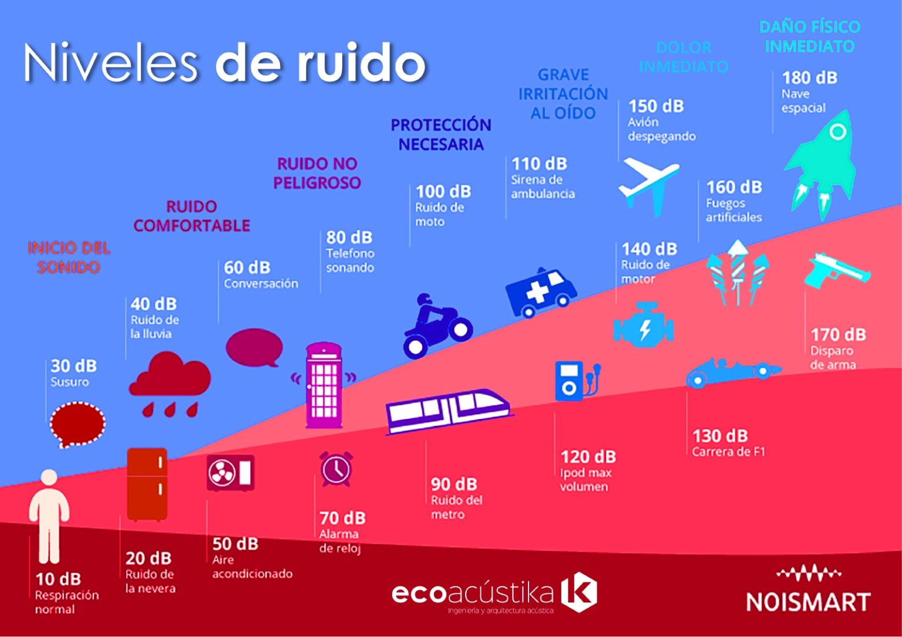

¿Qué es un decibel?
Comencemos por lo básico: el decibel (dB), es la unidad utilizada para medir la intensidad de un sonido. En la escala de decibeles, el sonido audible más pequeño (casi silencio total) es 0 dB. Un sonido 10 veces más potente que el silencio casi total, es 10 dB; un sonido 100 veces más potente es de 20 dB; y un sonido 1,000 veces más potente que el silencio casi total es de 30 dB. En la siguiente infografía, le presentamos algunos sonidos comunes y sus clasificaciones según los niveles de ruido.
¿Cómo se miden los niveles de ruido?
Generalmente, se utiliza un sonómetro para medir los niveles de ruido en escala de decibel. Sin embargo, existen diferentes factores que pueden afectar el resultado de la medición, como lo pueden ser: La distancia entre el medidor y la fuente del sonido. La dirección de la fuente de ruido, en relación con el medidor. Si la medición se toma al aire libre, donde el ruido puede incrementarse o en interiores, donde el ruido puede reverberar. Para que el reporte sea útil y preciso, es imprescindible especificar las condiciones en las que se efectuó la medición de ruido, especialmente la distancia desde la fuente de ruido.